4. Trieda BinarnyStrom¶
Doteraz sme pracovali so stromom tak, že sme zadefinovali triedu Vrchol pre jeden vrchol stromu a k tomu sme zadefinovali niekoľko funkcií (väčšinou rekurzívnych), ktoré pracovali s celým stromom. Napríklad:
class Vrchol:
def __init__(self, data, left=None, right=None):
self.data, self.left, self.right = data, left, right
def sucet(vrch):
if vrch is None:
return 0
return vrch.data + sucet(vrch.left) + sucet(vrch.right)
def vypis(vrch):
if vrch is None:
return
print(vrch.data, end=' ')
vypis(vrch.left)
vypis(vrch.right)
strom = Vrchol(1, Vrchol(2, None, Vrchol(3)), Vrchol(4))
vypis(strom)
print('sucet =', sucet(strom))
Dostávame takýto výpis:
1 2 3 4
sucet = 10
Prirodzenejšie a programátorsky správnejšie by bolo zadefinovanie triedy Binárny Strom, ktorá okrem definície jedného vrcholu bude obsahovať aj všetky užitočné funkcie ako svoje metódy. Teda zapuzdrime všetky funkcie spolu s dátovou štruktúrou do jedného „obalu“. Pre prístup ku stromu (k jeho vrcholom) si musíme pamätať referenciu na jeho koreň - to bude atribút self.root, ktorý bude mať pri inicializácii hodnotu None. Zapíšme základ:
class BinarnyStrom:
#------ vnorená trieda ------
class Vrchol:
def __init__(self, data, left=None, right=None): # inicializácia triedy Vrchol
self.data, self.left, self.right = data, left, right
#------ koniec definície vnorenej triedy ------
def __init__(self): # inicializácia triedy BinarnyStrom
self.root = None
Môžeme otestovať, napríklad takto:
strom = BinarnyStrom()
strom.root = strom.Vrchol(1,
strom.Vrchol(2,
None,
strom.Vrchol(3)),
strom.Vrchol(4))
vypis(strom)
print('sucet =', sucet(strom))
Vytvorenie stromu môžeme zapísať aj takto:
strom = BinarnyStrom()
v = strom.Vrchol
strom.root = v(1, v(2, None, v(3)), v(4))
Na minulej prednáške sme takto pridávali nový vrchol na náhodnú pozíciu v strome:
import random
def pridaj_vrchol(vrch, hodnota):
while True:
if random.randrange(2):
if vrch.left is None:
vrch.left = Vrchol(hodnota)
return
vrch = vrch.left
else:
if vrch.right is None:
vrch.right = Vrchol(hodnota)
return
vrch = vrch.right
Museli sme pritom predpokladať, že koreň stromu už existuje a jeho referencia je prvým parametrom funkcie. Z tejto funkcie urobíme metódu, ktorá bude fungovať aj pre prázdny strom. Zároveň doplníme inicializáciu __init__() o jeden parameter, vďaka čomu sa môže už pri inicializácii inštancie vytvoriť strom s náhodným umiestnením vrcholov s danými hodnotami:
import random
class BinarnyStrom:
#------ vnorená trieda ------
class Vrchol:
def __init__(self, data, left=None, right=None):
self.data, self.left, self.right = data, left, right
#------ koniec definície vnorenej triedy ------
def __init__(self, postupnost=None):
self.root = None
if postupnost:
for hodnota in postupnost:
self.pridaj_vrchol(hodnota)
def pridaj_vrchol(self, hodnota):
if self.root is None:
self.root = self.Vrchol(hodnota)
else:
vrch = self.root
while True:
if random.randrange(2):
if vrch.left is None:
vrch.left = self.Vrchol(hodnota)
return
vrch = vrch.left
else:
if vrch.right is None:
vrch.right = self.Vrchol(hodnota)
return
vrch = vrch.right
Takto vieme vytvárať náhodné binárne stromy s rôznym počtom vrcholov, ale zatiaľ s takýmito stromami nevieme robiť vôbec nič. Napríklad:
s1 = BinarnyStrom('Python')
s2 = BinarnyStrom([1] * 100)
s3 = BinarnyStrom(x**2 for x in range(10))
Teraz prerobíme jednu jednoduchšiu rekurzívnu funkciu sucet() na metódu. Najprv len zavolaním tejto globálnej funkcie:
class BinarnyStrom:
#------ vnorená trieda ------
class Vrchol:
def __init__(self, data, left=None, right=None):
self.data, self.left, self.right = data, left, right
#------ koniec definicie vnorenej triedy ------
def __init__(self, postupnost=None):
self.root = None
if postupnost:
for hodnota in postupnost:
self.pridaj_vrchol(hodnota)
...
def sucet(self):
return sucet_rek(self.root)
# --- globálna funkcia ---
def sucet_rek(vrch):
if vrch is None:
return 0
return vrch.data + sucet_rek(vrch.left) + sucet_rek(vrch.right)
Aby bola čitateľnejšia metóda sucet(), pôvodnú rekurzívnu funkciu sme premenovali na sucet_rek(). Takáto verzia funguje, ale programátorsky správnejšie bude, ak sucet_rek() nebude globálna, ale súčasťou triedy BinarnyStrom, napríklad bude vnorená v metóde sucet():
class BinarnyStrom:
...
def sucet(self):
# --- vnorená rekurzívna funkcia ---
def sucet_rek(vrch):
if vrch is None:
return 0
return vrch.data + sucet_rek(vrch.left) + sucet_rek(vrch.right)
# --- koniec vnorenej funkcie ---
return sucet_rek(self.root)
Teraz sa môžeme pustiť do rekurzívnej funkcie kresli(), ktorá vykresľuje strom do grafickej plochy:
import tkinter
def kresli(vrch, sirka, x, y):
if vrch.left:
canvas.create_line(x, y, x-sirka/2, y+50)
kresli(vrch.left, sirka/2, x-sirka/2, y+50)
if vrch.right:
canvas.create_line(x, y, x+sirka/2, y+50)
kresli(vrch.right, sirka/2, x+sirka/2, y+50)
canvas.create_oval(x-15, y-15, x+15, y+15, fill='lightblue', width=0)
canvas.create_text(x, y, text=vrch.data, font='consolas 15 bold')
canvas = tkinter.Canvas(width=600, height=300, bg='white')
canvas.pack()
strom = BinarnyStrom('abcdefghijkl')
kresli(strom.root, 300, 300, 30)
V tomto prípade ale bude treba riešiť niekoľko komplikácií:
canvasje globálna premenná, hoci nám by sa asi viac hodil triedny atribút, ktorý by bol spoločný pre všetky inštanciecanvasby bolo vhodné inicializovať až pri prvom zavolaní metódykresli()(nesmieme to inicializovať akoself.canvas=tkinter.Canvas(...), lebo takto by sa triedny atribút prekryl inštančným atribútom)keďže niekedy budeme potrebovať prekreslovať už nakreslený strom, bude treba túto predchádzajúcu kresbu vymazať, napríklad pomocou
canvas.delete('all')
Teraz to už môžeme zapísať:
import random
import tkinter
class BinarnyStrom:
canvas = None # triedny atribút
#------ vnorená trieda ------
class Vrchol:
def __init__(self, data, left=None, right=None):
self.data, self.left, self.right = data, left, right
#------ koniec definicie vnorenej triedy ------
...
def kresli(self):
#---- vnorená rekurzívna funkcia ----
def kresli_rek(vrch, sirka, x, y):
if vrch.left:
self.canvas.create_line(x, y, x-sirka/2, y+50)
kresli_rek(vrch.left, sirka/2, x-sirka/2, y+50)
if vrch.right:
self.canvas.create_line(x, y, x+sirka/2, y+50)
kresli_rek(vrch.right, sirka/2, x+sirka/2, y+50)
self.canvas.create_oval(x-15, y-15, x+15, y+15, fill='lightblue', width=0)
self.canvas.create_text(x, y, text=vrch.data, font='consolas 15 bold')
#----
if self.canvas is None:
BinarnyStrom.canvas = tkinter.Canvas(width=600, height=300, bg='white')
self.canvas.pack()
else:
self.canvas.delete('all')
kresli_rek(self.root, 300, 300, 30)
Všimnite si, ako sme to vyriešili:
pôvodnú rekurzívnu funkciu sme premenovali na
kresli_rek()a vnorili sme ju do metódykresli()(tá je teraz bez parametrov)canvasje teraz triedny atribút, inicializovaný je hodnotouNonepri prvom zavolaní metódy
kresli()má atribútcanvaszatiaľ hodnotuNone, preto treba vytvoriť grafickú plochu pomocouBinarnyStrom.canvas = tkinter.Canvas(...)pred každým vykresľovaním stromu do grafickej plochy sa najprv táto vymaže pomocou
canvas.delete('all')
Môžeme otestovať:
>>> s = BinarnyStrom('abcdefghijkl')
>>> s.kresli()
Dostávame, napríklad:
{kind=link}
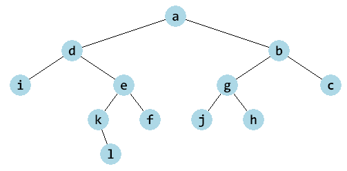
Na minulej prednáške sme zostavili niekoľko ďalších funkcií, napríklad aj tú, ktorá počíta počet prvkov (vrcholov) stromu:
def pocet(vrch):
if vrch is None:
return 0
return 1 + pocet(vrch.left) + pocet(vrch.right)
Keďže táto funkcia očakáva ako vstup vrchol, od ktorého sa počíta počet vrcholov (podstromu), musíme aj metódu, ktorá zisťuje počet prvkov štruktúry __len__(), zapísať inak. Opäť to urobíme podobne ako s metódami sucet() a kresli():
class BinarnyStrom:
...
def __len__(self):
#---- vnorená rekurzívna funkcia ----
def pocet(vrch):
if vrch is None:
return 0
return 1 + pocet(vrch.left) + pocet(vrch.right)
#----
return pocet(self.root)
Takýmto zápisom sa funkcia pocet() stáva lokálnou (vnorenou) do metódy __len__() a nik okrem nej ju nemôže používať. Prepíšme niektoré ďalšie rekurzívne funkcie ako metódy triedy BinarnyStrom:
def vyska(vrch):
if vrch is None:
return -1 # pre prázdny strom
return 1 + max(vyska(vrch.left), vyska(vrch.right))
def nachadza_sa(vrch, hodnota):
if vrch is None:
return False
if vrch.data == hodnota:
return True
if nachadza_sa(vrch.left, hodnota):
return True
if nachadza_sa(vrch.right, hodnota):
return True
return False
Teraz ako metódy:
class BinarnyStrom:
...
def vyska(self):
#---- vnorená rekurzívna funkcia ----
def vyska_rek(vrch):
if vrch is None:
return -1
return 1 + max(vyska_rek(vrch.left), vyska_rek(vrch.right))
#----
return vyska_rek(self.root)
def __contains__(self, hodnota):
#---- vnorená rekurzívna funkcia ----
def nachadza_sa(vrch, hodnota):
if vrch is None:
return False
return vrch.data==hodnota or nachadza_sa(vrch.left, hodnota) or nachadza_sa(vrch.right, hodnota)
#----
return nachadza_sa(self.root, hodnota)
Všimnite si ako sme zjednodušili poslednú z metód, ktorá zisťuje, či sa nejaká hodnota nachádza niekde v strome:
namiesto troch za sebou idúcich if-príkazov, sme zapísali jeden logický výraz, v ktorom sú podvýrazy spojené logickou operáciou
or- toto označuje, že takýto výraz sa bude vyhodnocovať zľava doprava:najprv
vrch.data == hodnota: ak je toTrue, ďalšie podvýrazy sa nevyhodnocujú a celkový výsledok jeTrue, inak sa spustí vyhodnocovanienachadza_sa(vrch.left, hodnota)nachadza_sa(vrch.left, hodnota)spustí rekurzívne zisťovanie, či sa daná hodnota nachádza v ľavom podstrome: ak áno celkový výsledok jeTrueinak sa ešte spustí posledný podvýraznachadza_sa(vrch.right, hodnota)nachadza_sa(vrch.right, hodnota)spustí rekurzívne zisťovanie, či sa daná hodnota nachádza v pravom podstrome: ak áno celkový výsledok jeTrueinakFalse
Pozrime sa ešte na parameter hodnota vo funkcii nachadza_sa():
do tohto parametra sme priradili hodnotu parametra metódy
__contains__()s rovnakým menompričom, keby vnorená funkcia
nachadza_sa()nemalahodnotaako svoj parameter, tak by videla na parameterhodnotanadradenej funkcie__contains__()takže poučenie: keď vnorená funkcia chce používať nejakú premennú z nadradenej funkcie (kde je vnorená), nemusí ju dostať ako parameter, ale môže ju priamo používať (teda môže pracovať s jej hodnotou, ale meniť ju takto nevieme)
Zapíšme trochu vylepšenú verziu metódy __contains__():
class BinarnyStrom:
...
def __contains__(self, hodnota):
#---- vnorená rekurzívna funkcia ----
def nachadza_sa(vrch):
if vrch is None:
return False
return vrch.data == hodnota or nachadza_sa(vrch.left) or nachadza_sa(vrch.right)
#----
return nachadza_sa(self.root)
Metódu sme nazvali __contains__(), vďaka čomu ju môžeme volať nielen takto:
>>> strom.__contains__(123)
True
ale aj
>>> 123 in strom
True
Prechádzanie vrcholov stromu¶
Globálna funkcia vypis(), ktorá v nejakom poradí vypisuje hodnoty vo všetkých vrcholoch, ich vypisuje do jedného riadku:
def vypis(vrch):
if vrch is None:
return
print(vrch.data, end=' ')
vypis(vrch.left)
vypis(vrch.right)
Prepíšme ju ako metódu stromu:
class BinarnyStrom:
...
def vypis(self):
#---- vnorená rekurzívna funkcia ----
def vypis_rek(vrch):
if vrch is None:
return
print(vrch.data, end=' ')
vypis_rek(vrch.left)
vypis_rek(vrch.right)
#----
vypis_rek(self.root)
print()
Vytvorili sme novú metódu vypis(), ktorá v svojom tele opäť obsahuje len tri príkazy: definíciu vnorenej (lokálnej) funkcie vypis_rek(), jej zavolanie s referenciou na koreň stromu a ukončenie vypisovaného riadka. Táto metóda (podobne ako skoro všetky doterajšie) obíde všetky vrcholy v strome tak, že najprv spracuje koreň stromu (vypíše ho príkazom print()), potom rekurzívne celý ľavý podstrom a na záver celý pravý podstrom.
Pozrime, akú postupnosť dostávame z náhodného stromu:
>>> s = BinarnyStrom('abcdefghijkl')
>>> s.kresli()
>>> s.vypis()
a d i e k l f b g j h c
Naozaj sa najprv vypísal koreň stromu 'a' a pokračovalo sa vo vypisovaní celého ľavého podstromu. Tento ľavý podstrom má koreň 'd' (vypísalo sa druhé písmeno) a opäť sa rekurzívne pokračovalo v ľavom podstrome ľavého podstromu teda s koreňom 'i' (vypísalo sa tretie písmeno). Keďže tento podstrom už nemá žiadne ďalšie vrcholy, toto rekurzívne volanie končí a pokračuje sa s pravým podstromom stromu s koreňom 'd', teda so stromom s 'e' (štvrté písmeno). Takto sa rekurzívne prejde celý strom.
Mohli by sme si graficky znázorniť trasu po ktorej sme takto prešli:
{kind=link}
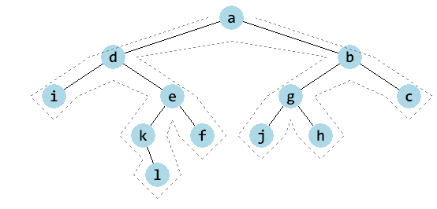
Obchádzame celý strom ale z vonkajšej strany pričom vždy, keď sa nachádzame naľavo od nejakého vrcholu, tak vypíšeme jeho hodnotu. Zakreslime si tieto prípady červenými šípkami:
{kind=link}
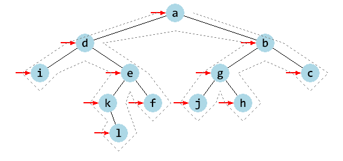
Tomuto budeme hovoriť poradie spracovania preorder, keďže v rekurzívnej funkcii sa najprv spracuje hodnota vo vrchole a až potom sa spracovávajú ľavý a pravý podstrom. Vo všeobecnosti algoritmus preorder poradia zapíšeme:
class BinarnyStrom:
...
def preorder(self):
#---- vnorená rekurzívna funkcia ----
def rek(vrch):
if vrch is None:
return
# spracuj samotný vrchol vrch
rek(vrch.left)
rek(vrch.right)
#----
rek(self.root)
alebo to isté zapísané aj trochu inak:
class BinarnyStrom:
...
def preorder(self):
#---- vnorená rekurzívna funkcia ----
def rek(vrch):
# spracuj samotný vrchol vrch
if vrch.left:
rek(vrch.left)
if vrch.right:
rek(vrch.right)
#----
if self.root:
rek(self.root)
Závisí od riešeného problému, ktorú z týchto verzií použijete. Všimnite si, že aj metódy __len__(), vyska(), __contains__(), sucet() boli tvaru preorder.
Pre nás je zaujímavý výpis z tohto preorder poradia: tento výpis závisí od tvaru binárneho stromu a bude užitočné, keď to budete vedieť nasimulovať aj ručne.
Okrem poradia preorder poznáme ešte tieto základné poradia obchádzania vrcholov stromu:
inorder - najprv ľavý podstrom, potom samotný vrchol a na záver pravý podstrom
postorder - najprv ľavý podstrom, potom pravý podstrom a na záver samotný vrchol
po úrovniach - vrcholy sa spracovávajú v poradí ako sú vzdialené od koreňa, t.j. najprv koreň, potom obaja jeho potomkovia, potom všetci vnuci, atď.
Zapíšme prvé dve metódy:
class BinarnyStrom:
...
def inorder_vypis(self):
#---- vnorená rekurzívna funkcia ----
def rek(vrch):
if vrch is None:
return
rek(vrch.left)
# spracuj samotný vrchol vrch
print(vrch.data, end=' ')
rek(vrch.right)
#----
rek(self.root)
print()
def postorder_vypis(self):
#---- vnorená rekurzívna funkcia ----
def rek(vrch):
if vrch is None:
return
rek(vrch.left)
rek(vrch.right)
# spracuj samotný vrchol vrch
print(vrch.data, end=' ')
#----
rek(self.root)
print()
Ak otestujeme tieto výpisy pre náš náhodne generovaný strom, dostávame:
>>> s.inorder_vypis()
i d k l e f a j g h b c
>>> s.postorder_vypis()
i l k f e d j h g c b a
Všimnite si, že keď v predchádzajúcom obrázku s obchádzaním vrcholov a s červenými šípkami vľavo od vrcholov presunieme šípky pod každý vrchol, dostávame inorder poradie:
{kind=link}
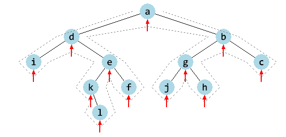
Podobne to bude, keď šípky presunieme vpravo od vrcholov dostaneme postorder poradie:
{kind=link}
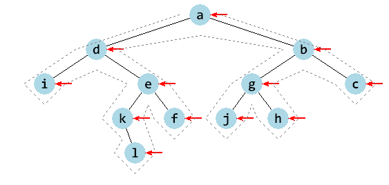
Tieto metódy by sa dali prepísať ako funkcie, ktoré vrátia znakový reťazec alebo zoznam, napríklad:
class BinarnyStrom:
...
def preorder_str(self):
#---- vnorená rekurzívna funkcia ----
def rek(vrch):
if vrch is None:
return ''
return str(vrch.data) + ' ' + rek(vrch.left) + rek(vrch.right)
#----
return rek(self.root)
def preorder_list(self):
#---- vnorená rekurzívna funkcia ----
def rek(vrch):
if vrch is None:
return []
return [vrch.data] + rek(vrch.left) + rek(vrch.right)
#----
return rek(self.root)
Už sme sa naučili, ako vytvárať generátor, ktorý vygeneruje postupnosť nejakých hodnôt. Prepíšme preorder ako generátor:
class BinarnyStrom:
...
def preorder_gener(self):
#---- vnorená rekurzívna funkcia ----
def rek(vrch):
if vrch is None:
return
# spracuj samotný vrchol vrch
yield vrch.data
yield from rek(vrch.left)
yield from rek(vrch.right)
#----
yield from rek(self.root)
Môžeme to otestovať:
>>> strom.preorder_gener()
<generator object BinarnyStrom.preorder_gener at 0x0000022B27B0ED50>
>>> list(strom.preorder_gener())
['a', 'd', 'i', 'e', 'k', 'l', 'f', 'b', 'g', 'j', 'h', 'c']
>>> ' '.join(strom.preorder_gener())
'a d i e k l f b g j h c'
>>> print(*strom.preorder_gener())
a d i e k l f b g j h c
Keďže generátor je vlastne iterátor, ktorý má automaticky definovaný next, môžeme zapísať:
class BinarnyStrom:
...
def __iter__(self):
return self.preorder_gener()
a funguje aj ako iterátor:
>>> iter(strom)
<generator object BinarnyStrom.preorder_gener at 0x0000022B27B0ED50>
>>> list(strom)
['a', 'd', 'i', 'e', 'k', 'l', 'f', 'b', 'g', 'j', 'h', 'c']
>>> '.'.join(strom)
'a.d.i.e.k.l.f.b.g.j.h.c'
>>> print(*strom)
a d i e k l f b g j h c
>>> it = iter(strom)
>>> for i in range(7):
print(next(it), end=' ')
a d i e k l f
Tieto algoritmy postupného prechádzania všetkých vrcholov v nejakom poradí sa môžu využiť, napríklad na postupnú zmenu hodnôt vo vrcholoch stromu. Použijeme počítadlo, ktorého hodnotu budeme pri prechádzaní stromu priraďovať a za každým ho budeme zvyšovať o 1. Toto počítadlo ale nemôže byť obyčajná lokálna premenná, lebo ju chceme meniť počas behu rekurzie a chceme, aby sa táto zmenená hodnota zapamätala. Preto môžeme počítadlo vyrobiť ako atribút triedy, s ktorým už tento problém nebude.
Nasledovná metóda ilustruje spôsob očíslovania vrcholov v strome v poradí preorder, koreň bude mať hodnotu 1:
class BinarnyStrom:
...
def ocisluj(self):
#---- vnorená rekurzívna funkcia ----
def ocisluj_rek(vrch):
if vrch is None:
return
vrch.data = self.cislo
self.cislo += 1
ocisluj_rek(vrch.left)
ocisluj_rek(vrch.right)
#----
self.cislo = 1
ocisluj_rek(self.root)
Pri podobných úlohách veľmi často existuje niekoľko veľmi rozdielnych spôsobov riešení. Toto isté môžeme dosiahnuť aj inak, napríklad tak, že počítadlom nebude atribút (stavová premenná inštancie) ale ďalší parameter rekurzívnej vnorenej funkcie. V tomto prípade, ale budeme od tejto pomocnej funkcie vyžadovať, aby nám oznámila, koľko čísel z počítadla v danom podstrome už minula. Inými slovami, funkcia bude vracať hodnotu počítadla, na ktorom skončila pri číslovaní vrcholov v podstrome:
class BinarnyStrom:
...
def ocisluj(self):
#---- vnorená rekurzívna funkcia ----
def ocisluj_rek(vrch, cislo):
if vrch is None:
return cislo
vrch.data = cislo
cislo = ocisluj_rek(vrch.left, cislo+1)
return ocisluj_rek(vrch.right, cislo)
#----
ocisluj_rek(self.root, 1)
Takže vnorená funkcia najprv očísluje vrchol, v ktorom sa nachádza (lebo je to preorder), potom očísluje vrcholy v ľavom podstrome a dozvie sa (ako výsledok funkcie) s akým číslom sa bude pokračovať v pravom podstrome. Na záver vráti novú hodnotu počítadla ako výsledok funkcie.
Prechádzanie po úrovniach¶
Tento algoritmus bude používať dátovú štruktúru queue (rad, front) takto:
na začiatku vyrobíme prázdny rad a vložíme do neho koreň stromu (čo je referencia na vrchol)
potom sa v cykle bude robiť nasledovné:
z radu sa vyberie prvý čakajúci vrchol (dequeue)
spracuje sa tento vrchol, napríklad sa pomocou
print()vypíše jeho hodnotana koniec frontu sa vložia (enqueue) obaja potomkovia spracovávaného vrcholu
po skončení cyklu (práve boli spracované všetky vrcholy) sa môže urobiť nejaký záverečný úkon, napríklad ukončiť rozpísaný riadok s výpisom vrcholov
Metóda, ktorá vypisuje hodnoty vo vrcholoch, ale prechádza strom po úrovniach, môže vyzerať takto:
class BinarnyStrom:
...
def vypis_po_urovniach(self):
if self.root is None:
return
q = [self.root] # q = Queue(); q.enqueue(self.root)
while q: # while not q.is_empty():
vrch = q.pop(0) # vrch = q.dequeue()
# spracuj vrchol
print(vrch.data, end=' ')
if vrch.left:
q.append(vrch.left) # q.enqueue(vrch.left)
if vrch.right:
q.append(vrch.right) # q.enqueue(vrch.right)
print()
V zápise funkcie môžete vidieť, aké operácie so štruktúrou rad sme nahradili operáciami s obyčajným zoznamom.
Po otestovaní, pre náš náhodný strom dostávame takéto poradie:
>>> s.vypis_po_urovniach()
a d b i e g c k f j h l
Ďalšia verzia pridáva do výpisu informáciu o konkrétnej úrovni - vrcholy, ktoré sú v rovnakej úrovni sa vypisujú do riadku a na nový riadok sa prejde vtedy, keď spracovávame vrchol z vyššej úrovne ako doteraz. Idea v tejto funkcii je taká, že do radu okrem samotného vrcholu z predchádzajúcej verzie budeme vkladať aj číslo úrovne. Preto, pri vyberaní vrcholu z radu, získavame aj jeho úroveň. Tiež musíme túto úroveň ukladať do radu, keď tam vkladáme nové vrcholy (potomkov momentálneho vrcholu):
class BinarnyStrom:
...
def vypis_po_urovniach(self):
if self.root is None:
return
q = [(self.root, 0)]
vypis = 0
while q:
vrch, uroven = q.pop(0)
# spracuj vrchol
if vypis != uroven:
print()
print(vrch.data, end=' ')
vypis = uroven
if vrch.left:
q.append((vrch.left, uroven+1))
if vrch.right:
q.append((vrch.right, uroven+1))
print()
Toto isté vieme dosiahnuť aj takýmto algoritmom (poštudujte a porovnajte):
class BinarnyStrom:
...
def vypis_po_urovniach(self):
if self.root is None:
return
uroven = [self.root]
while uroven:
dalsia_uroven = []
for vrch in uroven:
# spracuj vrchol
print(vrch.data, end=' ')
if vrch.left:
dalsia_uroven.append(vrch.left)
if vrch.right:
dalsia_uroven.append(vrch.right)
print()
uroven = dalsia_uroven
Všetky tieto tri metódy sú nerekurzívne - závisí od vás, ktorú verziu kedy použijete. To. že sú nerekurzívne, je veľmi dôležitá vlastnosť tohto algoritmu (hovorí sa mu aj algoritmus do šírky). Pomocou idey týchto algoritmov vieme riešiť veľkú skupinu úloh so stromami, napríklad
zisťovanie, v ktorej úrovni sa nachádza ten ktorý vrchol
zisťovanie šírky stromu - čo je maximum z počtu vrcholov v jednotlivých úrovniach
zisťovanie všetkých vrcholov, ktoré sú v jednej úrovni
úlohy, ktoré sa dajú riešiť rekurzívne (napríklad výška, počet vrcholov, apod.) ale ich nerekurzívne riešenie zabezpečí to, že takáto funkcia nespadne na pretečení rekurzie (čo je do 1000).
Všeobecný strom¶
Už vieme, že všeobecný strom je dátová štruktúra podobná binárnym stromom, ale na rozdiel od nich môže mať každý vrchol ľubovoľný počet svojich potomkov (namiesto dvojice referencií left a right má každý vrchol zoznam (list) všetkých svojich potomkov v atribúte child). Zapíšme definíciu triedy aj s niekoľkými užitočnými metódami:
import random
import tkinter
class VseobecnyStrom:
canvas = None
class Vrchol:
def __init__(self, data):
self.data = data
self.child = []
def __init__(self):
self.root = None
def __len__(self):
def rek(vrch):
if vrch is None:
return 0
return 1 + sum(map(rek, vrch.child))
return rek(self.root)
def __repr__(self):
def repr_rek(vrch):
if vrch is None:
return '()'
vysl = [repr(vrch.data)]
for child in vrch.child:
vysl.append(repr_rek(child))
## if len(vysl) == 1:
## return vysl[0]
return '(' + ','.join(vysl) + ')'
return repr_rek(self.root)
def pridaj_nahodne(self, *postupnost):
for hodnota in postupnost:
if self.root is None:
self.root = self.Vrchol(hodnota)
else:
vrch = self.root
while True:
n = len(vrch.child)
i = random.randrange(n+1)
if i == n:
vrch.child.append(self.Vrchol(hodnota))
break
vrch = vrch.child[i]
def kresli(self):
def kresli_rek(vrch, sir, x, y):
n = len(vrch.child)
if n != 0:
sir0 = sir // n
x1, y1 = x - sir - sir0, y + 50
for i in range(n):
x1 += 2*sir0
self.canvas.create_line(x, y, x1, y1)
kresli_rek(vrch.child[i], sir0, x1, y1)
self.canvas.create_oval(x-15, y-15, x+15, y+15, fill='lightblue', width=0)
self.canvas.create_text(x, y, text=vrch.data, font='consolas 14')
if self.canvas is None:
VseobecnyStrom.canvas = tkinter.Canvas(bg='white', width=600, height=400)
self.canvas.pack()
self.canvas.delete('all')
kresli_rek(self.root, 290, 300, 30)
Otestujeme:
strom = VseobecnyStrom()
strom.pridaj_nahodne(*(random.randrange(100) for i in range(20)))
strom.kresli()
print('pocet vrcholov v strome =', len(strom))
print('strom =', strom)
Náhodný strom môže vyzerať napríklad takto:
{kind=link}
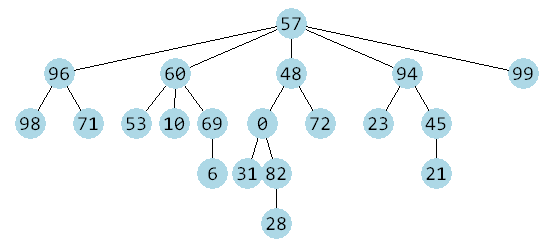
a potom dostávame takýto výpis:
pocet vrcholov v strome = 20
strom = (57,(96,(98),(71)),(60,(53),(10),(69,(6))),(48,(0,(31),(82,(28))),(72)),(94,(23),(45,(21))),(99))
keby sme do __repr__() pridali 2 riadky:
class VseobecnyStrom:
...
def __repr__(self):
def repr_rek(vrch):
if vrch is None:
return '()'
vysl = [repr(vrch.data)]
for child in vrch.child:
vysl.append(repr_rek(child))
if len(vysl) == 1:
return vysl[0]
return '(' + ','.join(vysl) + ')'
return repr_rek(self.root)
dostávame trochu úspornejší (menej zátvoriek) a možno čitateľnejší výpis:
>>> strom
(57,(96,98,71),(60,53,10,(69,6)),(48,(0,31,(82,28)),72),(94,23,(45,21)),99)
Z takéhoto zápisu sa dá teraz spätne skonštruovať celý strom:
je to vlastne n-tica, v ktorej je prvý prvok koreň (hodnota
57) a za tým nasledujú podstromy (potomkovia koreňa),prvý podstrom (potomok) je popísaný opäť n-ticou
(96,98,71), teda má hodnotu96a jeho potomkovia sú98a71,druhý podstrom je n-tica
(60,53,10,(69,6)), teda má hodnotu60a jeho potomkovia sú53,10a(69,6),tretí podstrom je
(48,(0,31,(82,28)),72)s hodnotou48a s dvoma potomkami0a72štvrtý podstrom
(94,23,(45,21))s hodnotou94piaty podstrom tvorí list
99
Toto by sa dalo popísať aj rekurzívnym algoritmom.
Reprezentácia potomok-súrodenec
Namiesto zoznamu všetkých potomkov (v atribúte child typu list) si v každom vrchole budeme pamätať len referenciu na prvého potomka (nazveme to child) a referenciu na nasledovného súrodenca (v atribúte sibling). Niekedy sa tejto reprezentácii hovorí aj syn-brat. V každom vrchole teda budú tieto dve referencie:
class Vrchol:
def __init__(self, data):
self.data = data
self.child = None # prvý potomok
self.sibling = None # nasledovný súrodenec
Takejto reprezentácii všeobecného stromu budeme hovoriť potomok-súrodenec (po anglicky child-sibling representation).
Ukážeme to na príklade. Tento všeobecný strom:
{kind=link}
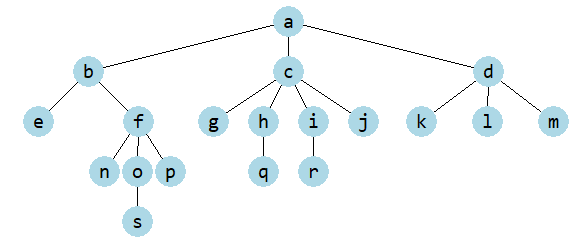
by v reprezentácii potomok-súrodenec vyzeral takto:
{kind=link}
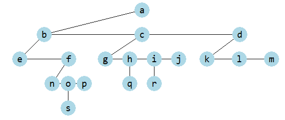
Takáto reprezentácia je vlastne binárny strom (vľavo sú prví potomkovia a vpravo sú nasledovní súrodenci). Keby sme to zobrazili rovnako ako binárne stromy, vyzeralo by to takto:
{kind=link}
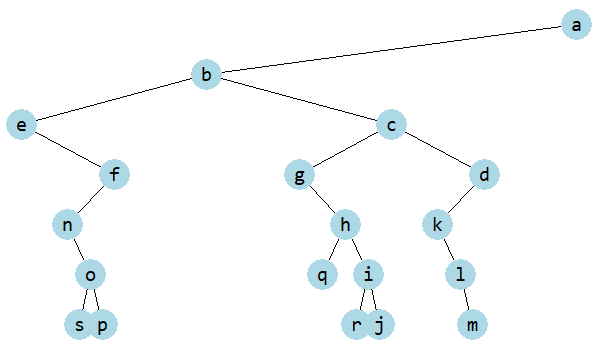
Cvičenie¶
Poznámka
riešenia úloh ulož do jedného súboru a odovzdaj na úlohový server https://vektor.fmph.uniba.sk/
testovací server tieto ulohy nebude testovať, vyrieš a odovzdaj ich aspoň 10 okrem tých, ktoré sú označené znakom -
prvé tri riadky súboru s riešením musia obsahovať:
# 4. cvicenie # student: Janko Hrasko # datum: 10.3.2026
zrejme ako študenta uvedieš svoje meno.
pre úlohy, v ktorých treba ručne nakresliť nejaký strom na papier, tieto kresby nemusíš ukladať do vektora
- Zostav triedu
BinarnyStromz prednášky s metódami:pridaj_vrchol(),sucet(),kresli(),__len__(),vyska()a__contains__().otestuj náhodné generovanie stromu so 16 vrcholmi, tak že vo všetkých vrcholoch budú hodnoty
'x'prekontroluj na takomto strome funkčnosť metód
__len__(),vyska()a__contains__()vygeneruj náhodný strom s náhodnými číslami vo vrcholoch: 20 vrcholov s náhodnými číslami od 0 do 5
na takomto strome over funkčnosť metódy
sucet()
Riešenie
import random import tkinter class BinarnyStrom: canvas = None # triedny atribút class Vrchol: def __init__(self, data, left=None, right=None): self.data, self.left, self.right = data, left, right def __init__(self, postupnost=None): self.root = None if postupnost: for hodnota in postupnost: self.pridaj_vrchol(hodnota) def pridaj_vrchol(self, hodnota): if self.root is None: self.root = self.Vrchol(hodnota) else: vrch = self.root while True: if random.randrange(2): if vrch.left is None: vrch.left = self.Vrchol(hodnota) return vrch = vrch.left else: if vrch.right is None: vrch.right = self.Vrchol(hodnota) return vrch = vrch.right def __len__(self): def pocet(vrch): if vrch is None: return 0 return 1 + pocet(vrch.left) + pocet(vrch.right) return pocet(self.root) def __contains__(self, hodnota): def nachadza_sa(vrch): if vrch is None: return False return vrch.data == hodnota or nachadza_sa(vrch.left) or nachadza_sa(vrch.right) return nachadza_sa(self.root) def vyska(self): def vyska_rek(vrch): if vrch is None: return -1 return 1 + max(vyska_rek(vrch.left), vyska_rek(vrch.right)) return vyska_rek(self.root) def sucet(self): def sucet_rek(vrch): if vrch is None: return 0 return vrch.data + sucet_rek(vrch.left) + sucet_rek(vrch.right) return sucet_rek(self.root) def kresli(self): def kresli_rek(vrch, sirka, x, y): if vrch.left: self.canvas.create_line(x, y, x-sirka/2, y+50) kresli_rek(vrch.left, sirka/2, x-sirka/2, y+50) if vrch.right: self.canvas.create_line(x, y, x+sirka/2, y+50) kresli_rek(vrch.right, sirka/2, x+sirka/2, y+50) self.canvas.create_oval(x-15, y-15, x+15, y+15, fill='lightblue', width=0) self.canvas.create_text(x, y, text=vrch.data, font='consolas 15 bold') if self.canvas is None: BinarnyStrom.canvas = tkinter.Canvas(width=600, height=300, bg='white') self.canvas.pack() else: self.canvas.delete('all') kresli_rek(self.root, 300, 300, 30)
Test pre strom so 16 vrcholmi s hodnotami
'x':strom = BinarnyStrom('x' * 16) strom.kresli() print('pocet =', len(strom)) print('vyska =', strom.vyska()) print('nachadza sa "x" =', 'x' in strom) print('nachadza sa "y" =', 'y' in strom)
Napríklad, pre takýto strom:
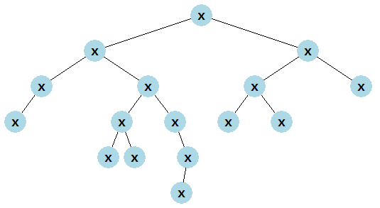
dostaneme tento výpis:
pocet = 16 vyska = 5 nachadza sa "x" = True nachadza sa "y" = False
Test pre strom s 10 vrcholmi s náhodnými hodnotami
<0, 5>:strom = BinarnyStrom(random.randint(0, 5) for i in range(10)) strom.kresli() print('sucet =', strom.sucet())
Napríklad, pre takýto strom:
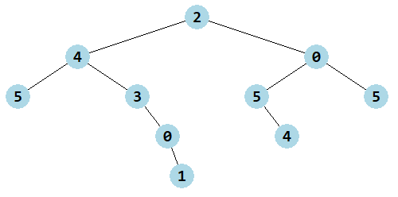
dostaneme tento výpis:
sucet = 29
{kind=link}
{kind=link}
- Do triedy
BinarnyStrompridaj metóducount(hodnota), ktorá rekurzívne prejde všetky vrcholy stromu a vráti počet výskytov zadanej hodnoty. Táto metóda by mala fungovať rovnako ako funguje metódacountprelistastr. Napríklad:>>> strom = BinarnyStrom('mama ma emu a ema ma mamu') >>> strom.count('m') 8 >>> 'mama ma emu a ema ma mamu'.count('m') 8
Riešenie
class BinarnyStrom: ... def count(self, hodnota): def count_rek(vrch): if vrch is None: return 0 return (vrch.data == hodnota) + count_rek(vrch.left) + count_rek(vrch.right) return count_rek(self.root)
Napríklad, takýto test:
strom = BinarnyStrom('mama ma emu a ema ma mamu') print(repr('m'), strom.count('m')) strom = BinarnyStrom('ma ma ma e mu a e ma ma ma mu'.split()) print(repr('ma'), strom.count('ma')) strom = BinarnyStrom((0, 1, 2, 1) * 50) for i in 0, 1, 2, 3: print(i, strom.count(i))
vypíše:
'm' 8 'ma' 6 0 50 1 100 2 50 3 0
- Do triedy
BinarnyStrompridaj metódy z prednášky:preorder(),inorder(),postorder()apo_urovniach()všetky ako generátor.otestuj všetky tieto typy prechodov vrcholov stromu pre náhodný strom s 10 vrcholmi s číslami 1 až 10; generátory môžeš vypisovať, napríklad takto:
>>> print('preorder =', *strom.preorder())
Riešenie
class BinarnyStrom: ... def preorder(self): def rek(vrch): if vrch: # if vrch is not None: yield vrch.data yield from rek(vrch.left) yield from rek(vrch.right) return rek(self.root) # alebo yield from rek(self.root) def inorder(self): def rek(vrch): if vrch: # if vrch is not None: yield from rek(vrch.left) yield vrch.data yield from rek(vrch.right) return rek(self.root) def postorder(self): def rek(vrch): if vrch: # if vrch is not None: yield from rek(vrch.left) yield from rek(vrch.right) yield vrch.data return rek(self.root) def po_urovniach(self): if self.root: q = [self.root] # q = Queue(); q.enqueue(self.root) while q: # while not q.is_empty(): vrch = q.pop(0) # vrch = q.dequeue() yield vrch.data if vrch.left: q.append(vrch.left) # q.enqueue(vrch.left) if vrch.right: q.append(vrch.right) # q.enqueue(vrch.right)
Test pre strom s 10 vrcholmi s hodnotami
<1, 10>:strom = BinarnyStrom(range(1, 11)) strom.kresli() print('preorder:', *strom.preorder()) print('inorder:', *strom.inorder()) print('postorder:', *strom.postorder()) print('po urovniach:', *strom.po_urovniach())
Napríklad, pre takýto strom:
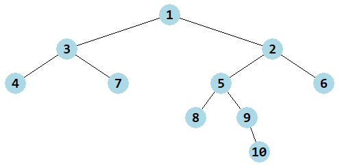
dostaneme tento výpis:
preorder: 1 3 4 7 2 5 8 9 10 6 inorder: 4 3 7 1 8 5 9 10 2 6 postorder: 4 7 3 8 10 9 5 6 2 1 po urovniach: 1 3 2 4 7 5 6 8 9 10
{kind=link}
- Pre daný strom
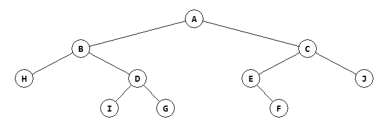
ručne vypíš postupnosti:
preorder
inorder
postorder
po úrovniach
Potom zostav a pomocou metódy
kresli()nakresli presne takýto istý strom a spusti vypisovacie metódy, aby si skontroloval svoje ručne vytvorené výpisy, napríklad:>>> strom = BinarnyStrom() >>> ... >>> strom.kresli() >>> print(*strom.preorder()) ...
Riešenie
preorder: A B H D I G C E F J inorder: H B I D G A E F C J postorder: H I G D B F E J C A po urovniach: A B C H D E J I G F
Strom sa dá vytvoriť takto:
strom = BinarnyStrom() strom.root = strom.Vrchol('A', strom.Vrchol('B', strom.Vrchol('H'), strom.Vrchol('D', strom.Vrchol('I'), strom.Vrchol('G'))), strom.Vrchol('C', strom.Vrchol('E', None, strom.Vrchol('F')), strom.Vrchol('J')))
Dá sa to zapísať aj takto:
strom = BinarnyStrom() v = strom.Vrchol strom.root = v('A', v('B', v('H'), v('D', v('I'), v('G'))), v('C', v('E', None, v('F')), v('J')))
{kind=link}
Do daného stromu
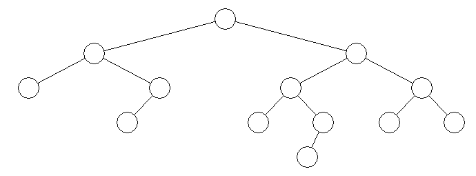
ručne vpíš hodnoty tak, aby výpisom pre postupnosť:
preorder bolo
'programovanie'inorder bolo
'programovanie'postorder bolo
'programovanie'po úrovniach bolo
'programovanie'
zrejme takto dostaneš štyri rôzne vyplnené stromy, ktoré všetky majú rovnaký tvar
{kind=link}
Nevieme, ako vyzerá nejaký binárny strom (jeho tvar), ale poznáme jeho inorder a postorder:
inorder = 2 8 3 5 9 1 7 4 10 6 postorder = 8 2 5 3 7 1 10 6 4 9
Ručne zostav preorder
uvedom si, aký vrchol bude v koreni stromu (posledný v postorder)
vidíš, kde sa v inorder nachádza číslo v koreni - potom všetky vrcholy vľavo tvoria ľavý podstrom a všetky vpravo pravý podstrom
pre každý z týchto podstromov vieš (z výpisu postorder) aký majú koreň - to sú potomkovia koreňa
takto pokračuješ, kým nezostavíš celý strom
keď máš strom hotový, zisti jeho preorder
Podobne, ako v úlohe (1) zostav a nakresli strom, ktorý si takto zostavil a spusti všetky štyri vypisovacie metódy pre kontrolu
- Ručne nakresli všetky binárne stromy, ktoré majú 3 vrcholy a sú očíslované hodnotami 1, 2, 3 a to po úrovniach. Potom ku každému nakreslenému stromu vypíš jeho inorder.
Riešenie
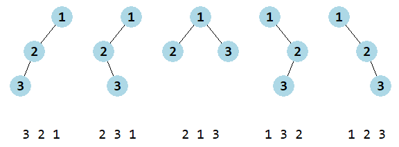
{kind=link}
Do triedy
BinarnyStromdopíš metódumapuj(funkcia)- zmení hodnotu v každom vrchole aplikovaním danej funkcieclass BinarnyStrom: ... def mapuj(self, funkcia): ... vrch.data = funkcia(vrch.data) ...
>>> strom = BinarnyStrom(...) >>> strom.mapuj(lambda x: x*11)
Do triedy
BinarnyStromdopíš metóduinorder_ocisluj(start=0, krok=1)- očísluje všetky vrcholy celými číslami od hodnotystarts krokomkroktak, žeinorder()vráti usporiadanú postupnosť čísel začínajúcu od zadaného štartu s daným krokom (na prednáške sa robila podobná metóda, ktorá robila nejaké očíslovanie vo verzii preorder):class BinarnyStrom: ... def inorder_ocisluj(self, start=0, krok=1): ...
>>> strom = BinarnyStrom('Python') >>> strom.inorder_ocisluj(3, 5) >>> print(*strom.inorder()) 3 8 13 18 23 28
Do triedy
BinarnyStromdopíš metóduprirad(postupnost)- postupne vyberá prvky z danej postupnosti (ľubovoľný iterovateľný typ) a priraďuje ich do vrcholov stromu v poradí preorder; ak je prvkov v postupnosti menej ako vrcholov stromu, zvyšné vrcholy ostanú bezo zmeny:class BinarnyStrom: ... def prirad(self, postupnost): ...
>>> strom = BinarnyStrom('x' * 10) >>> strom.prirad([2, 3, 5, 7, 11, 13]) >>> print(*strom.preorder()) 2 3 5 7 11 13 x x x x
Do triedy
BinarnyStromdopíš metódusurodenec(vrchol)- funkcia vráti referenciu na súrodenca zadaného vrcholu, resp.None, ak taký neexistuje:class BinarnyStrom: ... def surodenec(self, vrchol): ...
>>> strom = BinarnyStrom('python') >>> strom.kresli() >>> b = strom.surodenec(strom.root.right) >>> b.data ???
Do triedy
BinarnyStromdopíš metóduity(i), ktorá vráti hodnotu vi-tom vrchole (ak by sme ho prechádzali preorderom), nemala by sa pritom konštruovať celá preorder postupnosť, ale treba zavolať preorder-algoritmus a ukončiť ho prii-tom vrchole:class BinarnyStrom: ... def ity(self, i): ...
>>> strom = BinarnyStrom(range(10)) >>> print(*strom.preorder()) ... >>> for i in range(len(strom)): print(strom.ity(i), end=' ') ...
oba výpisy vypíšu rovnakú postupnosť
Do triedy
BinarnyStromdopíš metódukopia()- vráti kópiu celého stromu, t.j. novú inštanciu triedyBinarnyStrom, v ktorej sa vyrobila kópia každého vrcholu pôvodného stromu:class BinarnyStrom: ... def kopia(self): ...
>>> strom = BinarnyStrom('programovanie') >>> kopia = strom.kopia() >>> print(*strom.inorder()) ... >>> print(*kopia.inorder()) ...
oba výpisy vypíšu rovnakú postupnosť hodnôt
Nasledovné rekurzívne metódy prepíš pomocou algoritmu po úrovniach na ich nerekurzívne verzie:
vyska()__len__()sucet()
class BinarnyStrom: ... def vyska_nerek(self): ... def pocet_nerek(self): ... def sucet_nerek(self): ...
Skontroluj ich s pôvodnými rekurzívnymi verziami:
>>> strom = BinarnyStrom(range(100)) >>> print('vyska =', strom.vyska(), strom.vyska_nerek()) vysk = ??? ??? >>> print('pocet =', strom.__len__(), strom.pocet_nerek()) pocet = 100 100 >>> print('sucet =', strom.sucet(), strom.sucet_nerek()) sucet = 4950 4950
Využitím algoritmu prechádzania po úrovniach (
po_urovniach()) naprogramuj tieto metódy:ocisluj_po_urovniach(start=0, krok=1)- očísluje všetky vrcholy celými číslami od hodnotystarts krokomkrokv_urovni(k)- vráti zoznam (typulist) vrcholov (ich hodnôt) v danej úrovni, prek=0zoznam obsahuje jedinú hodnotu v koreni stromu (namiesto zoznamu môžeš vrátiť generátor)sirka()- zistí šírku stromu
class BinarnyStrom: ... def ocisluj_po_urovniach(self, start=0, krok=1): ... def v_urovni(self, k): ... def sirka(self): ...
>>> strom = BinarnyStrom(...) >>> strom.ocisluj_po_urovniach(1) >>> strom.kresli() >>> for k in range(strom.vyska() + 1): print('v urovni', k, '=', strom.v_urovni(k)) v urovni 0 = [...] v urovni 1 = [...] v urovni 2 = [...] ... >>> print('sirka =', strom.sirka()) sirka = ...
Napíš metódu
vyrob_uplny(n, hodnota='x'), ktorá pôvodny obsah stromu zruší a nahradí ho úplným stromom výškyn. Všetky vrcholy v strome budú mať dátovú časťhodnota. Otestuj, napríklad:>>> strom = BinarnyStrom() >>> strom.vyrob_uplny(4) >>> strom.vyska() 4 >>> strom.kresli()
Všeobecné stromy
- Oprav definíciu triedy
VseobecnyStromtak, aby sa pri inicializácii vrcholov mohli uviesť aj referencie na podstromy:class VseobecnyStrom: canvas = None class Vrchol: def __init__(self, data, *child): ... ...
Napríklad:
>>> v = VseobecnyStrom.Vrchol >>> s = VseobecnyStrom() >>> s.root = v('a', v('b', v('c'), v('d')), v('e', v('f', v('g')), v('h'), v('i'), v('j'))) >>> s ('a',('b','c','d'),('e',('f','g'),'h','i','j'))
Riešenie
class VseobecnyStrom: canvas = None class Vrchol: def __init__(self, data, *child): self.data, self.child = data, [*child] ...
Do triedy
VseobecnyStromnapíš metódy:preorder()- vráti generátor všetkých hodnôt v stromevyska()- zistí výšku stromupocet_listov()- zistí počet listov stromu
class VseobecnyStrom: ... def preorder(self): ... def vyska(self): ... def pocet_listov(self): ...
4. Týždenný projekt¶
Poznámka
riešenie úlohy ulož do textového súboru s príponou
.pya odovzdaj na testovací server https://vektor.fmph.uniba.sk/prvé tri riadky súboru s riešením musia obsahovať:
# 4. tyzdenny projekt # student: Janko Hraško # datum: 15.3.2026
zrejme ako študenta uvedieš svoje meno, dátum uprav podľa dátumu odovzdania
nepoužívaj
importaniglobal
Napíš modul, ktorý bude obsahovať jedinú triedu s ďalšou vnorenou podtriedou a rôznymi metódami (podtriedu Node nemodifikuj):
class FamilyTree:
class Node:
def __init__(self, data, left=None, right=None):
self.data, self.left, self.right = data, left, right
# ----------------------------
def __init__(self, file_name):
self.root = ...
...
...
Trieda bude riešiť takúto úlohu:
budeš zostavovať rodokmeň panovníckej rodiny vymysleného kráľovstva
keďže každý člen tejto rodiny mal maximálne dvoch potomkov, na reprezentáciu rodokmeňa použiješ binárny strom
informácie o rodinných vzťahoch sú uložené v textovom súbore: v každom riadku je dvojica mien rodič-potomok (oddelené sú znakom
'-'), napríklad:
Predslav-Vladimir
Miroslav-Boleslav
Predslav-Kazimir
...
Kompletný súbor (je to prvý testovací súbor 'subor1.txt') reprezentuje takýto rodokmeň (uvedom si, že v samotnom súbore nie je informácia o tom, ktorý z potomkov je ľavý potomok a ktorý pravý potomok, preto správny rodokmeň je ľubovoľný strom, ktorý zodpovedá týmto dvojiciam zo súboru):
{kind=link}
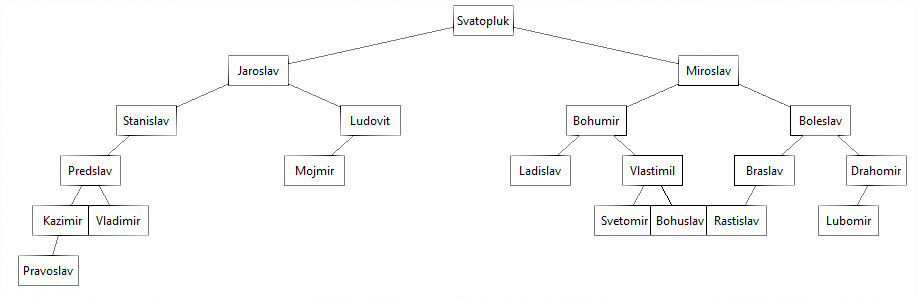
Všimni si, že blokov (teda dvojíc mien) v tomto súbore je presne o jeden menej, ako je vrcholov v strome - totiž každý vrchol okrem koreňa je niekoho potomkom a teda sa nachádza práve v jednom bloku súboru ako potomok (na druhom mieste dvojice). Zrejme, koreňom stromu je ten jediný vrchol, ktorý medzi potomkami chýba.
Metódy triedy FamilyTree by mali mať túto funkčnosť (môžeš si dodefinovať aj ďalšie pomocné metódy, ale žiadne ďalšie atribúty):
__init__(file_name)- prečíta zadaný textový súbor a vytvorí z neho binárny strom s koreňom vself.root(všetky vrcholy musia byť typuself.Node); môžeš predpokladať, že súbor je zadaný korektne:každý riadok obsahuje dvojicu mien
prvé meno v dvojici je niektorý rodič, druhé meno je jeho potomok
keďže tieto dvojice sú v súbore v náhodnom poradí, musíš vymyslieť nejakú ideu, ako celý strom skonštruuješ (môžeš využiť, napríklad, typy
dictaset, ale nie ako atribúty)definíciu triedy
Nodenemodifikuj
add_child(data1, data2)- k existujúcemu vrcholu s menomdata1, pridá nového potomkadata2toto bude fungovať len vtedy, ak vrchol
data1už existuje, zatiaľ v strome neexistuje vrchol s menomdata2adata1už nemá dvoch potomkov (inak táto metóda so stromom neurobí nič)metóda vráti
True, ak sa vrcholdata2úspešne pridal do stromu, inak vrátiFalse
__len__()- vráti počet vrcholov v strome__iter__()- vráti iterátor všetkých vrcholov v strome, tento iterátor môže vrátiť ľubovoľné poradie vrcholovparent(data)- pre zadané meno zistí jeho rodiča (vráti jeho meno)ak meno rodiča nenájde, metóda vráti
None
children(data)- pre vrchol s daným menom vráti generátor mien vrcholov jeho priamych potomkovsibling(data)- pre zadané meno zistí jeho súrodenca (vráti jeho meno)ak meno súrodenca nenájde, metóda vráti
None
subtree_num(data)- nájde vrchol so zadaným menom a vráti počet vrcholov v podstrome, ktorý začína od tohto vrcholuak sa zavolá s menom v koreni stromu, tak vráti počet všetkých vrcholov v strome (to isté ako
len(strom))ak sa zavolá s menom v liste stromu, tak vráti 1 (podstrom má len tento jeden vrchol)
ak v strome zadané meno nenájde, vráti 0
height()- vráti výšku stromudepth(data)- vráti hĺbku vrcholu s daným menom (ako ďaleko je to od koreňa stromu k tomuto vrcholu)hĺbka koreňa je 0
ak vrchol so zadaným menom nenájde, vráti
None
width()- vráti dvojicu (tuple): (šírku stromu a úroveň, v ktorej bola táto šírka stromu)ak je táto šírka vo viacerých úrovniach, tak metóda zoberie prvú z nich (v najvyššej úrovni)
descendant(data1, data2)- zistí, čidata2je jeden z potomkov pre vrcholdata1(v celom podstrome); metóda vrátiTrue, ak áno, inak vrátiFalselevel(k)- vráti generátor všetkých mien na zadanej úrovni:pre
k==0vráti generátor s jedným menom v koreni stromupre
k==1vráti generátor (maximálne) s dvomi menami potomkov koreňa
leaves()- funkcia vráti generátor všetkých mien listov stromu (v ľubovoľnom poradí)
Testovacie súbory si môžeš stiahnuť z 2tp04.zip, pričom
strom v 1. súbore má 20 vrcholov
strom v 2. súbore má 63 vrcholov
strom v 3. súbore má skoro 1000 vrcholov
strom v 4. súbore má 1500 vrcholov
strom v 5. súbore má skoro 100000 vrcholov
Binárne stromy pre 4. a 5. testové súbory sú tak veľké, že na nich nemusí bežať rekurzia. Preto by bolo vhodné všetky metódy prepísať bez použitia rekurzie.